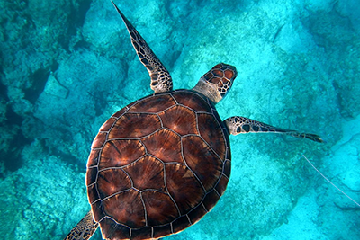

Marine mammals range in species more than most people realize.
They aren't all traditional mammals like otters, covered in fur. some are extremely different, like dolphins or whales, which are both mammals even though they seem much more fish-like. Mammals in the ocean are very interesting, as even whales cannot breathe under the water.
Fish make up the majority of Marine and ocean life, being a wide category of animals.
fish can be just about anything, from minnows in a pond to sharks in the ocean. they can be really anywhere where there is water, with little true restrictions to where they can survive.
Marine reptiles are some of the most iconic animals in the waters. The most recognizable of which is the sea turtle. But it is not the only one. animals like sea snakes and crocodiles are also marine reptiles. Marine reptiles are cold blooded, and some can breathe in the water.
